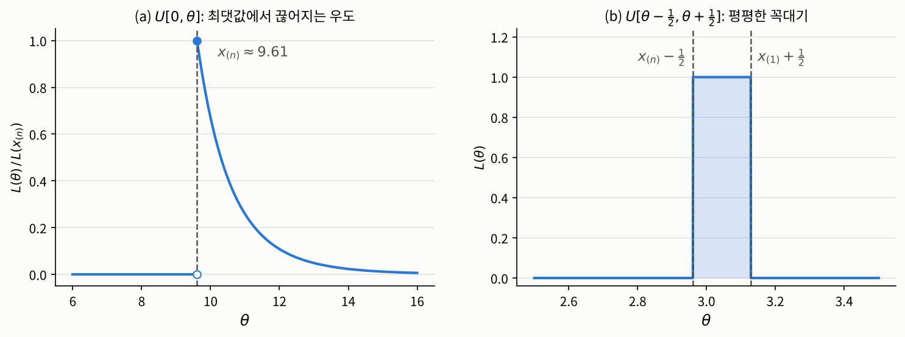

1.2 점수 방정식이 통하지 않을 때
1장 최대우도 추정 · 경계, 미분 불가능, 유일하지 않은 최댓값
들어가며
1.1절에서는 점수 방정식 \(\partial \ell / \partial \theta = 0\)을 풀어 최대우도 추정값을 구했습니다. 이 방법은 정리 1.1.6에 기대고 있는데, 그 정리가 말해 주는 것은 생각보다 적습니다. 최댓값이 모수공간의 내부에 있고, 그 점에서 \(\ell\)이 미분가능하다면, 그 점은 점수 방정식의 해라는 것뿐입니다. 거꾸로 말하면 다음 세 가지 경우에는 점수 방정식만으로 답을 얻을 수 없습니다.
- 최댓값이 모수공간의 경계에 있거나, 경계로 다가가기만 하고 도달하지 않는 경우
- 최댓값에서 우도가 미분가능하지 않은 경우
- 최댓값을 주는 점이 여러 개인 경우
1.1절의 포아송 예에서 \(\bar{x} = 0\)인 표본이 첫 번째 경우였습니다. 이번 글에서는 세 경우를 각각 대표하는 예를 하나씩 살펴봅니다. 세 예는 모두 짧지만, 우도함수 전체를 들여다보지 않고 점수 방정식만 기계적으로 풀면 어디서 틀리는지를 분명하게 보여 줍니다.
문제 1: 동전 던지기와 경계에 있는 최댓값
문제 상황
앞면이 나올 확률이 \(p\)인 동전을 \(n\)번 던져서, 앞면이면 \(1\), 뒷면이면 \(0\)으로 기록했다고 합시다. 각 결과를 \(X_1, \ldots, X_n \overset{\text{i.i.d.}}{\sim} B(1, p)\)로 모형화하고, 모수공간은 \(\Theta = (0, 1)\)로 둡니다. 베르누이 분포는 \(\{0, 1\}\) 위의 세는 측도에 대한 밀도 \(f(x, p) = p^x (1-p)^{1-x}\)를 가지므로, \(\bar{x} := \frac{1}{n}\sum_{i=1}^n x_i\)로 쓰면 우도함수는
\[L(p) = \prod_{i=1}^n p^{x_i}(1-p)^{1-x_i} = p^{n\bar{x}}(1-p)^{n(1-\bar{x})}\]
입니다.
해결
\(0 < \bar{x} < 1\)이면, 즉 앞면과 뒷면이 모두 한 번 이상 나왔다면 1.1절과 같은 방법이 그대로 통합니다. 점수 방정식
\[\frac{\partial \ell}{\partial p}(p) = \frac{n\bar{x}}{p} - \frac{n(1-\bar{x})}{1-p} = 0\]
의 해는 \(p = \bar{x}\) 하나뿐이고, 점수 함수가 \(p < \bar{x}\)에서 양수, \(p > \bar{x}\)에서 음수이므로 \(\hat{p} = \bar{x}\)가 최댓값입니다.
문제는 \(\bar{x} = 0\), 즉 \(n\)번 모두 뒷면이 나온 경우입니다. 이때 \(L(p) = (1-p)^n\)은 \((0, 1)\)에서 순감소하므로, \(p\)를 \(0\)에 가까이 가져갈수록 상한 \(1\)에 다가가지만 \((0, 1)\) 안의 어떤 점에서도 그 값에 도달하지 않습니다. 따라서 최대우도 추정값이 존재하지 않습니다. 모두 앞면이 나온 \(\bar{x} = 1\)인 경우도 마찬가지입니다.
해결 방법은 1.1절의 포아송 예와 같습니다. 모수공간을 그 폐포 \(\bar{\Theta} = [0, 1]\)로 넓히면 됩니다. \(0^0 := 1\)로 약속하면 \(p = 0\)과 \(p = 1\)은 각각 항상 뒷면, 항상 앞면만 나오는 퇴화된 분포를 뜻하고, 이렇게 넓힌 모수공간에서는 \(\bar{x} = 0\)일 때 \(L(0) = 1\)이 최댓값이 됩니다. 결국 모든 표본에 대해 최대우도 추정값 \(\hat{p} = \bar{x}\)가 존재하고, \(\bar{x} \in \{0, 1\}\)인 경우에는 그 값이 경계점입니다.
그렇다면 원래의 모수공간 \((0, 1)\)에서 추정값이 존재하지 않는 일은 얼마나 자주 일어날까요? 그 확률은
\[\mathbb{P}_p(\bar{X} = 0 \text{ 또는 } \bar{X} = 1) = (1-p)^n + p^n\]
이고, \(p \in (0, 1)\)이 고정되어 있으면 \(n \to \infty\)일 때 \(0\)으로 갑니다. 하지만 \(n\)이 고정된 상황에서 \(p\)가 \(0\)이나 \(1\)에 가까우면 이야기가 다릅니다. \(n = 20\)으로 두고 확인해 보겠습니다.
import numpy as np
np.random.seed(1557)
n, reps = 20, 100_000
for p in [0.5, 0.2, 0.05]:
x = np.random.binomial(1, p, size=(reps, n))
xbar = x.mean(axis=1)
no_mle = np.mean((xbar == 0) | (xbar == 1)) # (0,1) 안에 추정값이 없는 비율
print(f"p = {p:.2f}: 시뮬레이션 {no_mle:.4f}, 이론값 {(1-p)**n + p**n:.4f}")p = 0.50: 시뮬레이션 0.0000, 이론값 0.0000
p = 0.20: 시뮬레이션 0.0110, 이론값 0.0115
p = 0.05: 시뮬레이션 0.3624, 이론값 0.3585앞면 확률이 \(5\%\)인 동전이라면 20번 던져도 세 번에 한 번꼴로 앞면이 한 번도 나오지 않고, 그때마다 원래의 모수공간에서는 추정값이 없습니다. 드문 사건을 다룰 때 이 문제가 결코 이론 속의 이야기만은 아니라는 뜻입니다.
이 현상은 4장에서 다른 모습으로 다시 등장합니다. 로지스틱 회귀에서 데이터가 두 집단으로 완벽하게 갈리면 우도가 계속 커지기만 하고 최댓값에 도달하지 않아서, 최대우도 추정값이 존재하지 않습니다. 이를 분리(separation) 현상이라고 하는데, 절편만 있는 로지스틱 회귀에서 모든 관측값이 \(0\)인 경우가 바로 지금 본 \(\bar{x} = 0\)인 베르누이 표본입니다.
문제 2: 버스 대기 시간과 미분할 수 없는 최댓값
문제 상황
어느 정류장의 버스는 정해진 간격 \(\theta\)분마다 오는데, 그 간격을 모른다고 합시다. 아무 때나 정류장에 도착한 사람이 기다리는 시간은 \([0, \theta]\) 위의 균등분포를 따릅니다. 서로 다른 날 기다린 시간 \(n\)개를 기록해 \(X_1, \ldots, X_n \overset{\text{i.i.d.}}{\sim} U[0, \theta]\)로 모형화하고, 모수공간은 \(\Theta = (0, \infty)\)로 둡니다. 배차 간격 \(\theta\)를 어떻게 추정해야 할까요?
필요한 개념
이 모형의 우도는 관측값 중 가장 큰 값에 의해 결정됩니다. 이처럼 관측값을 크기순으로 늘어놓았을 때의 값을 따로 부르는 이름이 있습니다.
해결
\(U[0, \theta]\)의 밀도는 르베그 측도에 대해 \(f(x, \theta) = \theta^{-1}\mathbf{1}\{0 \le x \le \theta\}\)입니다. 관측값은 모두 \(0\) 이상이므로 우도함수는
\[L(\theta) = \prod_{i=1}^n \frac{1}{\theta}\mathbf{1}\{0 \le x_i \le \theta\} = \theta^{-n}\,\mathbf{1}\{x_{(n)} \le \theta\}\]
입니다. 관측값이 모두 \(\theta\) 이하여야 우도가 \(0\)이 아니고, 이는 가장 큰 관측값 \(x_{(n)}\)이 \(\theta\) 이하라는 것과 같기 때문입니다.
이 함수의 모양을 보면 답이 바로 나옵니다. \(\theta < x_{(n)}\)이면 우도는 \(0\)입니다. 배차 간격이 실제로 기다린 시간보다 짧을 수는 없으니 당연합니다. \(\theta \ge x_{(n)}\)이면 우도는 \(\theta^{-n}\)으로 순감소합니다. 따라서 우도는 \(\theta = x_{(n)}\)에서 최대가 되고, 최대우도 추정값은
\[\hat{\theta} = x_{(n)}\]
입니다. \(x_{(n)} = 0\)인 경우는 확률 \(0\)으로만 일어나므로 무시해도 됩니다.

위 그림 (a)는 \(\theta = 10\)인 분포에서 뽑은 표본 10개로 그린 우도입니다. 우도가 \(x_{(n)}\)에서 \(0\)에서 최댓값으로 뛰어오르므로, 최댓값에서 미분가능하지 않습니다. 그렇다면 점수 방정식은 어떨까요? \(\theta > x_{(n)}\)에서 로그우도 \(\ell(\theta) = -n\log\theta\)의 도함수는 \(-n/\theta\)인데, 이는 결코 \(0\)이 되지 않습니다. 즉 점수 방정식을 기계적으로 풀었다면 해가 없다는 결론만 얻고 끝났을 것입니다. 우도함수의 모양 전체를 직접 들여다봐야 하는 이유입니다.
이 추정값에는 눈에 띄는 성질이 하나 있습니다. 관측값은 모두 \(\theta\) 이하이므로 \(X_{(n)} \le \theta\)이고, 연속분포이므로 등호는 확률 \(0\)으로만 성립합니다. 즉 최대우도 추정량은 언제나 참값보다 작게 나옵니다. 1.1절에서 정규분포의 분산 추정량이 평균적으로 작게 나왔던 것보다 훨씬 강한 치우침입니다. 계산해 보면 \(\mathbb{E}_\theta[X_{(n)}] = \frac{n}{n+1}\theta\)입니다. 시뮬레이션으로 확인해 보겠습니다.
np.random.seed(1557)
theta, n, reps = 10, 10, 100_000
x = np.random.uniform(0, theta, size=(reps, n))
theta_hat = x.max(axis=1) # 표본마다 계산한 x_(n)
print(f"theta_hat의 평균 = {theta_hat.mean():.3f}")
print(f"n/(n+1) * theta = {n / (n + 1) * theta:.3f}")
print(f"theta_hat < theta인 비율 = {np.mean(theta_hat < theta)}")theta_hat의 평균 = 9.092
n/(n+1) * theta = 9.091
theta_hat < theta인 비율 = 1.010만 개의 표본 모두에서 추정값이 참값보다 작게 나왔습니다.
이 모형은 지금까지 본 모형들과 한 가지가 근본적으로 다릅니다. 포아송, 베르누이, 정규분포에서는 \(\theta\)가 바뀌어도 관측값이 나올 수 있는 범위, 즉 받침(support)이 그대로였습니다. 반면 \(U[0, \theta]\)는 \(\theta\)에 따라 받침 \([0, \theta]\) 자체가 움직입니다. 이 차이 때문에 \(U[0, \theta]\)는 1.5절에서 다룰 최대우도 추정량의 점근 정규성이 성립하지 않는 대표적인 예가 되고, 그때 다시 돌아오게 됩니다.
문제 3: 측정 오차와 유일하지 않은 최댓값
문제 상황
어떤 물체의 참된 길이 \(\theta\)를 측정하는데, 측정 장비의 눈금 때문에 측정값에 \(-\frac{1}{2}\)에서 \(\frac{1}{2}\) 사이의 오차가 고르게 섞인다고 합시다. 측정을 \(n\)번 반복한 결과를 \(X_1, \ldots, X_n \overset{\text{i.i.d.}}{\sim} U[\theta - \frac{1}{2}, \theta + \frac{1}{2}]\)로 모형화하고, 모수공간은 \(\Theta = \mathbb{R}\)로 둡니다.
해결
밀도는 르베그 측도에 대해 \(f(x, \theta) = \mathbf{1}\{\theta - \frac{1}{2} \le x \le \theta + \frac{1}{2}\}\)이므로, 우도함수는
\[L(\theta) = \prod_{i=1}^n \mathbf{1}\Big\{\theta - \frac{1}{2} \le x_i \le \theta + \frac{1}{2}\Big\} = \mathbf{1}\Big\{x_{(n)} - \frac{1}{2} \le \theta \le x_{(1)} + \frac{1}{2}\Big\}\]
입니다. 모든 관측값이 구간 \([\theta - \frac{1}{2}, \theta + \frac{1}{2}]\) 안에 들어와야 하고, 이는 가장 작은 값과 가장 큰 값이 그 안에 들어오는 것과 같기 때문입니다. 모든 관측값은 길이 \(1\)인 구간 안에 있으므로 \(x_{(n)} - x_{(1)} \le 1\)이고, 따라서 이 구간은 비어 있지 않습니다.
위 그림 (b)에서 보듯이 우도는 구간 \([x_{(n)} - \frac{1}{2},\, x_{(1)} + \frac{1}{2}]\) 위에서 \(1\)이고 나머지에서는 \(0\)입니다. 꼭대기가 뾰족한 점이 아니라 평평한 구간이므로, 이 구간의 모든 점이 최대우도 추정값입니다. 즉 참고 1.1.5의 집합 \(M(\mathbf{x})\)가 구간 전체이고, 최대우도 추정값이 유일하지 않습니다. 점수 방정식으로 보면 구간 안에서는 \(\ell\)이 상수라서 도함수가 모든 점에서 \(0\)이고, 점수 방정식은 최댓값이 어디 있는지 전혀 가려내지 못합니다.
\(\theta = 3\), \(n = 10\)으로 직접 계산해 보면 다음과 같습니다.
np.random.seed(1557)
theta, n = 3, 10
x = theta + np.random.uniform(-0.5, 0.5, size=n)
lo, hi = x.max() - 0.5, x.min() + 0.5
print(f"최대우도 추정값의 집합: [{lo:.4f}, {hi:.4f}]")최대우도 추정값의 집합: [2.9608, 3.1288]이 경우 최대우도 추정량을 만들려면, 참고 1.1.5에서 말한 대로 각 표본마다 이 구간에서 값 하나를 고르는 규칙 \(T\)를 정해야 합니다. 예를 들어 다음 두 규칙은 모두 연속함수이므로 가측이고, 언제나 구간 안의 값을 고르므로 둘 다 최대우도 추정량입니다.
\[T_1(\mathbf{X}) := \frac{X_{(1)} + X_{(n)}}{2} \quad (\text{구간의 가운데}), \qquad T_2(\mathbf{X}) := X_{(n)} - \frac{1}{2} \quad (\text{구간의 왼쪽 끝})\]
둘 다 최대우도 추정량이지만, 추정량으로서의 성능은 같지 않습니다. 표본을 10만 번 새로 뽑아 각 추정량의 평균과 평균제곱오차(mean squared error), 즉 \(\mathbb{E}[(T - \theta)^2]\)를 비교해 보겠습니다. 비교를 위해 표본평균도 함께 계산합니다.
reps = 100_000
x = theta + np.random.uniform(-0.5, 0.5, size=(reps, n))
mid = (x.min(axis=1) + x.max(axis=1)) / 2 # T1: 구간의 가운데
low = x.max(axis=1) - 0.5 # T2: 구간의 왼쪽 끝
avg = x.mean(axis=1) # 비교용: 표본평균
for name, t in [("T1 (가운데) ", mid), ("T2 (왼쪽 끝) ", low), ("표본평균 ", avg)]:
print(f"{name}: 평균 {t.mean():.4f}, 평균제곱오차 {np.mean((t - theta)**2):.5f}")
inside = (avg >= x.max(axis=1) - 0.5) & (avg <= x.min(axis=1) + 0.5)
print(f"표본평균이 최대우도 추정값인 비율: {inside.mean():.4f}")T1 (가운데) : 평균 2.9999, 평균제곱오차 0.00379
T2 (왼쪽 끝) : 평균 2.9092, 평균제곱오차 0.01509
표본평균 : 평균 2.9999, 평균제곱오차 0.00835
표본평균이 최대우도 추정값인 비율: 0.6940구간의 가운데를 고른 \(T_1\)은 평균적으로 참값 \(3\)을 맞히고 오차도 가장 작습니다. 반면 구간의 왼쪽 끝을 고른 \(T_2\)는 평균적으로 작게 나오고 오차도 네 배 가까이 큽니다. 같은 최대우도 원리에서 나왔는데도 어떤 값을 고르느냐에 따라 추정량의 성능이 크게 달라지는 것입니다. 최대우도 원리만으로는 둘 중 무엇을 골라야 할지 정해지지 않으므로, 대칭성 같은 다른 기준을 끌어와야 합니다.
덧붙여 표본평균은 이 모형에서 평균적으로 참값을 맞히지만, 평균제곱오차가 \(T_1\)의 두 배가 넘습니다. 게다가 표본의 약 \(30\%\)에서는 우도가 \(0\)인 값, 즉 데이터와 모순되는 값을 내놓습니다. 그런 \(\theta\)라면 관측된 측정값 중 일부가 나올 수 없었을 것이라는 뜻입니다. 1.1절의 두 예에서는 표본평균이 곧 최대우도 추정값이었지만, 모형이 바뀌면 “평균을 내면 된다”는 직관이 더 이상 최선이 아닐 수 있다는 좋은 예입니다.
정리: 우도함수 전체를 봐야 하는 이유
세 문제를 나란히 놓으면 다음과 같습니다.
| 모형 | 무엇이 문제인가 | 최대우도 추정값 | |
|---|---|---|---|
| 문제 1 | \(B(1, p)\) | \(\bar{x} \in \{0, 1\}\)이면 최댓값이 경계로 달아남 | 모수공간을 \([0, 1]\)로 넓혀 \(\hat{p} = \bar{x}\) |
| 문제 2 | \(U[0, \theta]\) | 최댓값에서 우도가 끊어져 미분 불가능 | \(\hat{\theta} = x_{(n)}\) |
| 문제 3 | \(U[\theta - \frac{1}{2}, \theta + \frac{1}{2}]\) | 꼭대기가 평평해 최댓값이 무수히 많음 | 구간 \([x_{(n)} - \frac{1}{2}, x_{(1)} + \frac{1}{2}]\)의 모든 점 |
세 경우 모두 점수 방정식을 기계적으로 풀었다면 틀린 답을 얻거나 아무 답도 얻지 못했을 것입니다. 1.1절의 알고리즘 1.1.7에서 마지막 단계로 “후보가 정말 \(\Theta\) 전체에서의 최댓값인지 확인하고, 모수공간의 경계와 미분가능하지 않은 점도 함께 살펴본다”를 둔 것이 바로 이 때문입니다. 점수 방정식은 최댓값을 찾는 편리한 도구일 뿐이고, 최대우도 추정값의 정의는 어디까지나 우도함수 전체에서의 최댓값입니다.
한편 이 예들은 거꾸로 점수 방정식이 잘 통하는 조건이 무엇인지도 알려 줍니다. 모수공간이 열린집합이고, 받침이 모수에 의존하지 않으며, 로그우도가 매끄럽고 꼭대기가 하나뿐인 뾰족한 모양이면 됩니다. 다행히 실제로 쓰이는 많은 모형이 이 조건을 만족하고, 다음 절부터는 주로 이런 모형을 다룹니다. 1.3절에서는 로그우도의 기울기와 곡률, 즉 점수 함수와 피셔 정보를 정확하게 정의하고, 이 “뾰족한 정도”가 무엇을 알려 주는지 살펴봅니다.
연결되는 개념
- \(\leftarrow\) 이전 개념: 1.1 우도와 최대우도 추정
- \(\rightarrow\) 다음 개념: 1.3 점수 함수와 피셔 정보